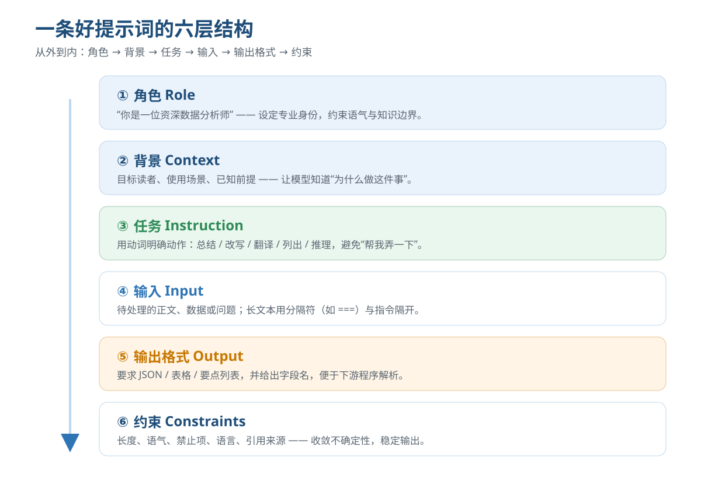
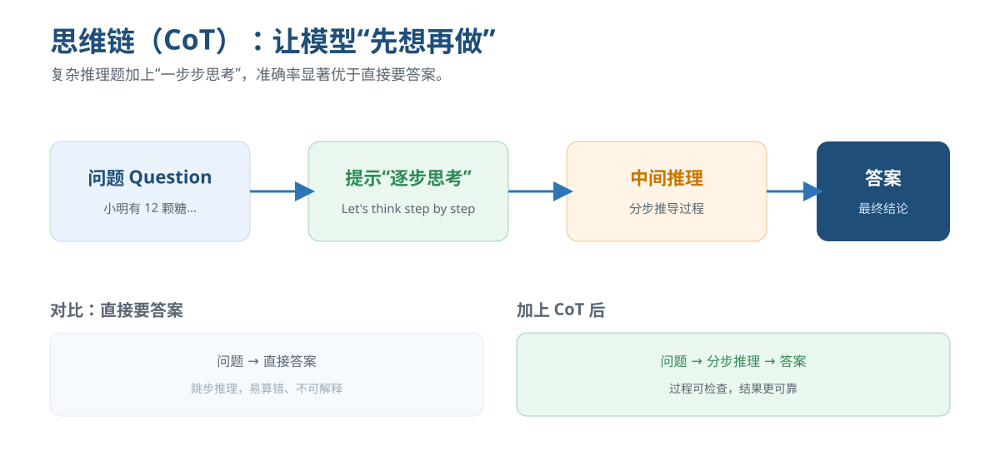

大模型提示词工程
从一句 "hello" 到写出稳定、可控、可复用的 AI 工作流。一套人人都能学会的表达方法，把大模型真正用出生产力。
前言 · 三段式学习路径
提示词工程不是"玄学"，而是一套可拆解、可练习的表达技术。跟着下面三段走，你也能从会用到大用。
看懂
先理解大模型"听"懂什么：它按概率续写，靠结构化的意图、上下文和约束来收敛输出。看懂一条好提示的内部构造。
第 1–3 节照做
套用模板与速查卡，把角色、任务、输入、格式、约束五要素写全。先模仿，再在真实任务里跑通第一条可用提示。
第 4–6 节用出花
掌握思维链、少样本、结构化输出等进阶技巧，把零散对话沉淀成可复用的提示词与自动化工作流。
第 7–9 节一、提示词工程是什么
提示词工程（Prompt Engineering）是通过设计输入文本，引导大模型稳定、准确地产生期望输出的实践。
大模型本质是「根据上文预测下一个词」的概率模型。它不会"理解"你的潜台词，只能根据你写下的文字去推断意图。所谓"会说话"，其实是你把需求表达得足够清晰、结构足够明确。
好的提示词有三个特征：意图明确（要它做什么）、上下文充分（为什么做、给什么材料）、约束清晰（长什么样、别做什么）。下面用一张表对比差距：
| 维度 | ❌ 弱提示 | ✅ 强提示 |
|---|---|---|
| 任务 | "帮我写点东西" | "写一段 120 字的小红书种草文案" |
| 角色 | 无设定 | "你是有 10 年经验的母婴博主" |
| 输入 | 材料混在指令里 | 用 === 分隔材料与指令 |
| 格式 | 随便输出 | "输出 JSON，字段：title、body、tags" |
| 约束 | 无 | "口语化、不夸大、不出现绝对化用语" |
二、能力全景
掌握提示词工程后，你可以用自然语言驱动这些事情。先建立地图，再挑场景深入。
写作与改写
公文、营销文案、周报、润色、缩写扩写，统一语气与风格。
代码助手
按需生成函数、写单测、解释报错、做 Code Review。
数据分析
清洗、汇总、用自然语言查询表格，生成图表建议。
翻译与本地化
保留术语与语气，处理文化适配与行业用语。
推理与规划
拆解问题、列步骤、做决策对比与风险评估。
角色对话
模拟面试官、教练、客服，进行陪练与答疑。
三、真实场景
点开不同标签，看同一套「五要素」如何在各场景落地。可直接复制改造。
把"随便写写"变成可交付文案
关键：定角色 + 定平台语气 + 定结构与禁区。
你是一位资深电商文案。为「便携咖啡机」写一条 80 字内的抖音口播稿：
- 开头 3 秒抓眼球
- 强调"办公室也能喝现磨"
- 语气：热情、口语、不浮夸
- 禁止：绝对化用语、"最"字、虚假承诺让模型当靠谱的结对程序员
关键：给语言/框架版本、输入输出契约、约束。
用 Python 3.11 写一个函数 parse_csv(text: str) -> list[dict]：
- 第一行为表头
- 自动推断 int/float/str 类型
- 空单元格记为 None
- 含非法行的抛出 ValueError 并说明行号
只输出代码与简短注释，不要解释。用自然语言查表
关键：贴数据 + 明确口径 + 要结构化结果。
以下是本月销售 CSV：
date,region,amount
2026-07-01,华东,1200
2026-07-01,华北,800
...
请按 region 汇总 amount，输出 JSON：
[{"region": "...", "total": ...}]，并列出最高区域。翻译而非字对字转换
关键：给目标读者、术语表、语气。
将下面产品说明译为英文，面向北美开发者：
- 术语：工作流=workflow，插件=plugin
- 语气：简洁专业，符合技术文档惯例
- 保留代码块与占位符不变
原文：=== 在插件市场安装后，工作流会自动加载 ===四、上手四步
照着走一遍，你就能写出第一条"能用"的提示词。
定角色与任务
用"你是…"设定身份，用动词写明要做什么（总结/生成/对比），避免"帮我弄一下"。
给材料与背景
把待处理文本、目标读者、已知前提写清，长材料用 === 与指令分隔。
要格式与约束
指定 JSON/表格/要点，给出字段名；写明长度、语气、禁区，收敛随机性。
试跑与迭代
跑 2–3 次看波动点，哪里不稳就补一条约束；存成模板反复复用。
五、环境准备
提示词工程不需要本地部署模型。按你的使用习惯选一种入口即可。
零门槛：直接用网页/App 对话
适合学习与轻量任务。打开对话产品，把提示词粘进输入框即可。建议开启「新对话」以清空上下文，保证结果可复现。
- 把提示词存成笔记模板，下次直接复制。
- 同一问题多开几个会话对比不同写法。
可编程：用 API 批量/自动化
适合把提示词接进自己的工作流。把 system 字段放"角色与规则"，user 字段放"任务与材料"。
import openai
resp = openai.chat.completions.create(
model="gpt-4o-mini",
messages=[
{"role":"system","content":"你是严谨的数据分析师，只输出 JSON。"},
{"role":"user","content":"汇总以下销售：\n===\n地区,金额\n华东,1200"}
],
temperature=0.2
)隐私优先：本地客户端
适合处理敏感数据。下载本地推理客户端，加载开源权重后在界面里使用同样的提示词写法。注意本地小模型对长提示的遵循度通常弱于云端大模型。
- 提示要更短、指令更直白。
- 复杂任务优先拆成多轮。
六、界面速览
无论哪种入口，一次对话都由「系统设定 + 用户输入 + 模型回复」组成。理解这条结构，你就掌握了调优的旋钮。

七、进阶技巧
当你要模型做"难一点"的事，下面这些技巧能显著提升稳定度与质量。
1. 角色设定（Role Prompting）
开篇用"你是一位…"赋予专业身份，约束知识边界与语气。角色越具体，输出越贴领域。
2. 少样本（Few-shot）
给 1–3 个"输入→输出"范例，让模型照着学格式与风格，比纯文字描述更稳。
3. 思维链（Chain-of-Thought）
对推理、数学、多步任务，加一句"请一步步思考"，模型会先列中间过程再给答案，准确率与可解释性都更好。

4. 结构化输出
明确要求 JSON / 表格 / 字段名，便于程序解析；对严格场景要求"只输出 JSON，不要解释"。
5. 约束与负向指令
用"不要…/必须…/长度≤…"收敛不确定性。约束过多会互相打架，按优先级排。
八、Prompt 速查卡
复制即用。把方括号里的内容换成你的实际信息即可。
你是一位[角色]，擅长[领域]。
背景：[目标读者/场景/已知前提]
任务：[动词]完成[具体事项]
输入：
===
[待处理材料]
===
要求：
1. 输出格式：[JSON/表格/要点]
2. 长度：[如 200 字内]
3. 语气：[如专业克制]
4. 禁止：[如夸大、绝对化]你是严谨的[领域]专家。
请解决下面的问题，要求：
- 先把问题拆成步骤
- 一步步写出推理过程
- 最后用"结论："给出最终答案
- 若信息不足，明确说明缺什么
问题：
=== [问题] ===把下面的用户评论分类为 正向/中性/负向。
示例：
"物流太快了，满意" → 正向
"一般般，没惊喜" → 中性
"客服半天不回，差评" → 负向
现在分类：
=== [待分类评论] ===
只输出类别名。从以下文本抽取信息，只输出 JSON，不要解释：
{"name":"", "org":"", "date":"", "amount":0}
文本：
=== [原文] ===九、动手练习
勾选完成项，进度会自动保存（存在本机浏览器）。建议真去跑一遍，比看十遍印象深。
十、常见问题
提示词写越长越好吗？
为什么同样的提示，两次结果不一样？
本地小模型能直接用这些技巧吗？
模型"胡说"（幻觉）怎么办？
有哪些必须避开的写法？
附录 · 学习资源
想继续深入，可沿着这些方向扩展。（链接仅为方向示例，请按需检索最新资料）